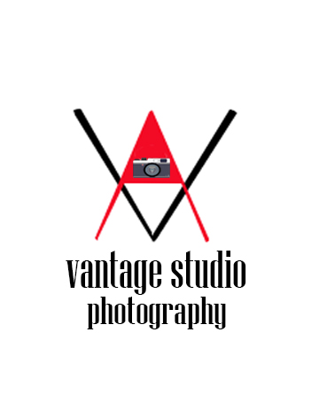

VANTAGE STUDIO
VANTAGE STUDIO
Vantage studio menyediakan jasa photography maupun videography dengan kualitas,layanan yang baik juga harga terjangkau.
kami menerima dari
-Beauty shot & personal potrait
-Birth day party(acara ulang tahun)
apa saja yang pernah kami dokumentasikan


Portrait photography Adalah jenis fotografi yang mengutamakan pengambilan gambar pada subjek manusia dengan menampilkan kesan fokus pada
kepribadian seseorang atau sekelompok orang.